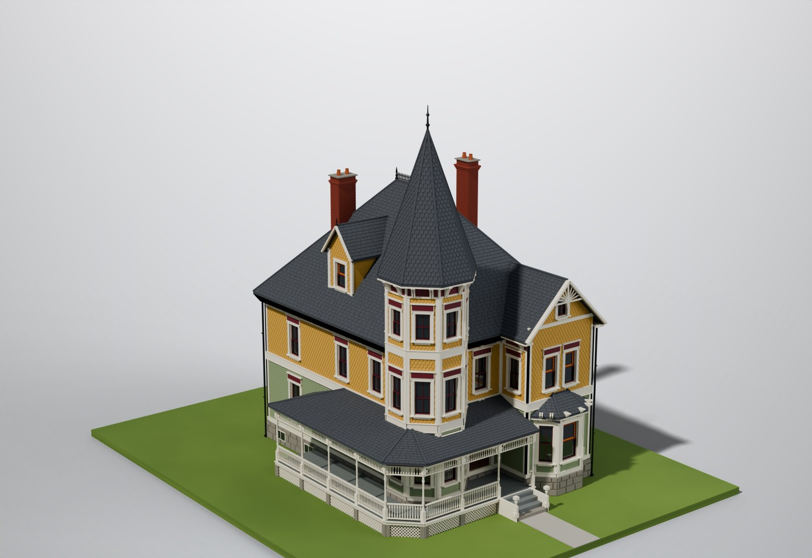

An original 2½-storey Victorian with a corner tower, wraparound porch and a front gable wing. Construction follows the same flat-panel kit method as the Victorian #2 reference model. Revision A is the look only: pick it apart before any printable parts are made.

Renders are Cycles path-traced from the actual model geometry. Every shingle, clapboard, baluster and spindle is modelled, not painted on. 3D spin loads the full model (≈6 MB); drag to orbit, scroll or pinch to zoom.
Each decision has a code. Tell me what to change by code, e.g. A2: shorter tower.
11 ft across, spire roof at a 71° pitch, cast finial. Its tip sits about 44 mm above the main ridge.
round tower, shorter 2½-storey tower, or bell-cast (flared) spire
49° pitch, iron cresting on the short ridge, 1½ ft boxed eaves with paired brackets.
shallower roof, or a side gable on the right to break up the long wall
Canted bay window on the first floor, pair of stained-glass windows above, attic window in the gable.
wider wing, or a two-storey bay
Fish-scale face, Queen Anne sash, small finial.
remove, or add a matching dormer on the right
Exterior chimney on the right wall with a stone-capped shoulder; interior chimney at the back. Corbelled caps, clay pots.
shorter stacks, or both interior
4½″ exposure (1.3 mm on the model): true to scale.
6½″ wide tabs (1.9 mm), overlapping rows with real relief.
clapboard on both floors, with shingles only in the gables
A third texture band, typical of Queen Anne.
Hip and ridge caps are modelled separately.
uniform asphalt-style courses (prints faster)
Basement hopper windows on the sides and back.
Chamfered corner around the tower, turned posts, spindle frieze, gingerbread brackets, turned-baluster railing, lattice skirt on piers.
full wrap to the right side, or a round gazebo corner
Cornice heads with oxblood panels, sills and aprons. Feature windows get Queen Anne sashes with a coloured-glass border.
1-over-1, or add louvered shutters
Fluted pilasters, open pediment, raised panels, glazed upper halves.
Pierced spindle fan with a hanging pendant.
stick-style truss, or a simpler bargeboard
The rear side is kept simpler on purpose (less print time where nobody looks).
a small back porch
A classic “painted lady” palette. Each colour becomes its own set of printed parts, as in the reference kit.
D1: tell me if you want a different scheme (e.g. blue/white, all-white farmhouse, or brick first floor like the reference).
| Element | Prototype | Model |
|---|---|---|
| Storey heights | 11 ft + 11 ft | 38.5 + 38.5 mm |
| Main walls | 30 × 38 ft | 105 × 133 mm |
| Window (1st floor) | 2′10″ × 6′2″ | 9.8 × 21.7 mm |
| Porch post | 8′5″ tall | 29.4 mm |
| Baluster spacing | 4¼″ | 1.22 mm |